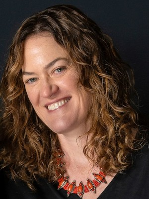

The Cosmic Explorer (CE) Ombuds Office provides confidential, informal, independent, and impartial dispute resolution advisory services for all members of the CE Consortium. The Ombuds Office assists members in identifying and evaluating options for resolving and managing conflicts, facilitates conversations and informal mediation when appropriate and voluntarily agreed to by the participants, and makes referrals to other appropriate academic and community resources. The CE Ombuds Office is meant to help with conflicts that arise in any CE-organized activities and involving at least one CE member, not in problems internal to an academic institution. When a matter may also fall within the jurisdiction of a member's institution or another organization, the Ombuds Office can help the member identify and understand appropriate avenues for addressing the concern.
Contact us: ombuds@cosmicexplorer.org
